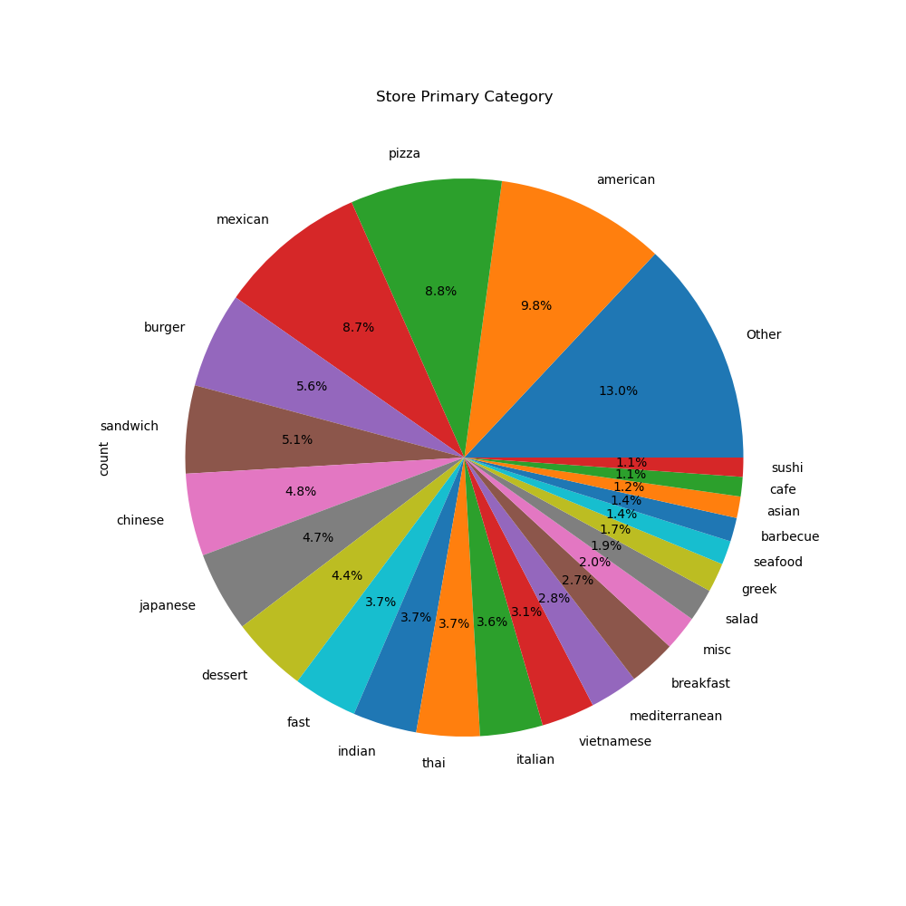
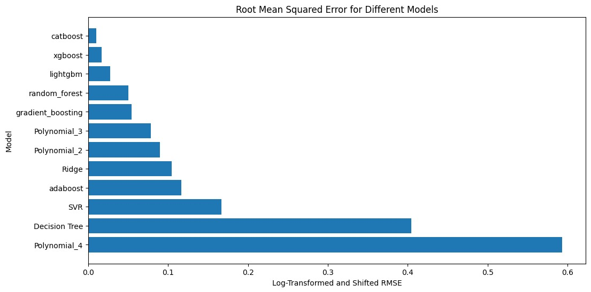
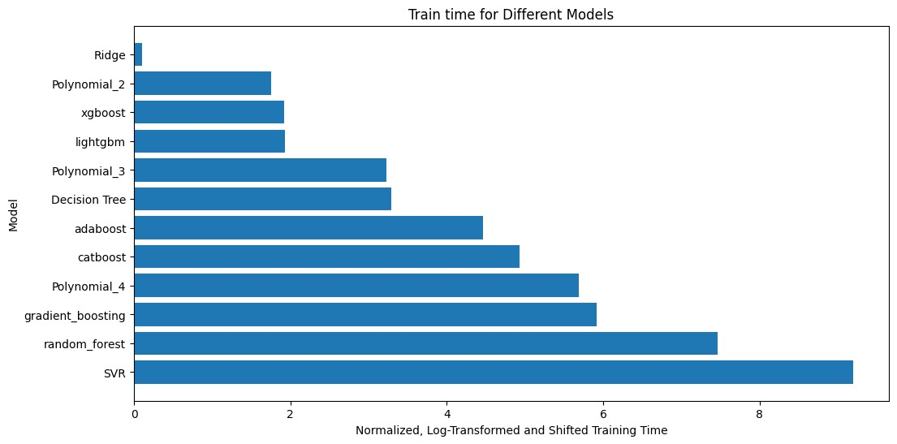
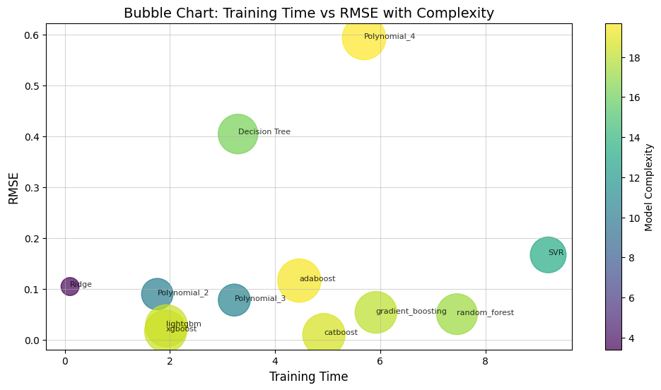
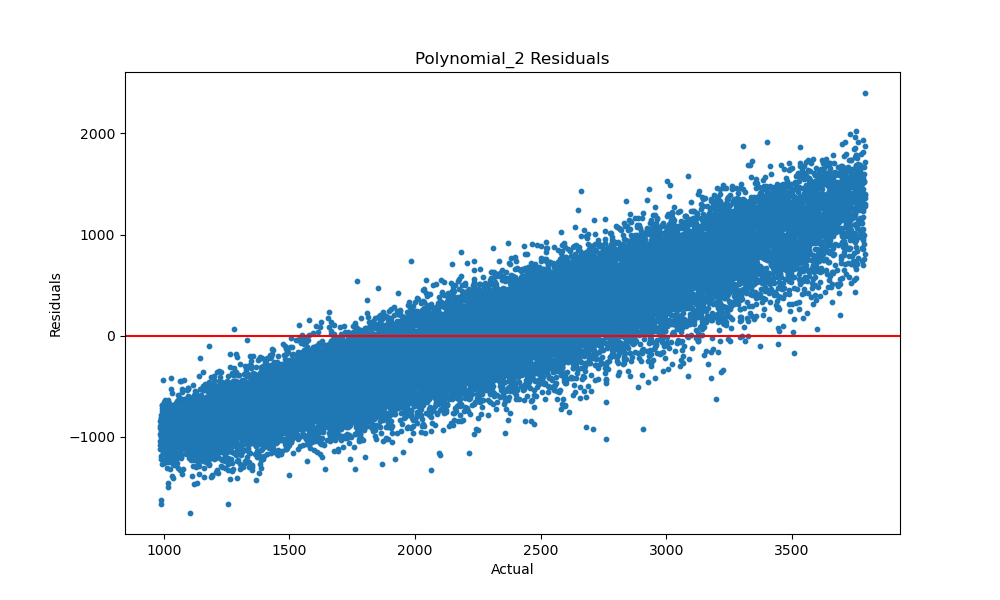
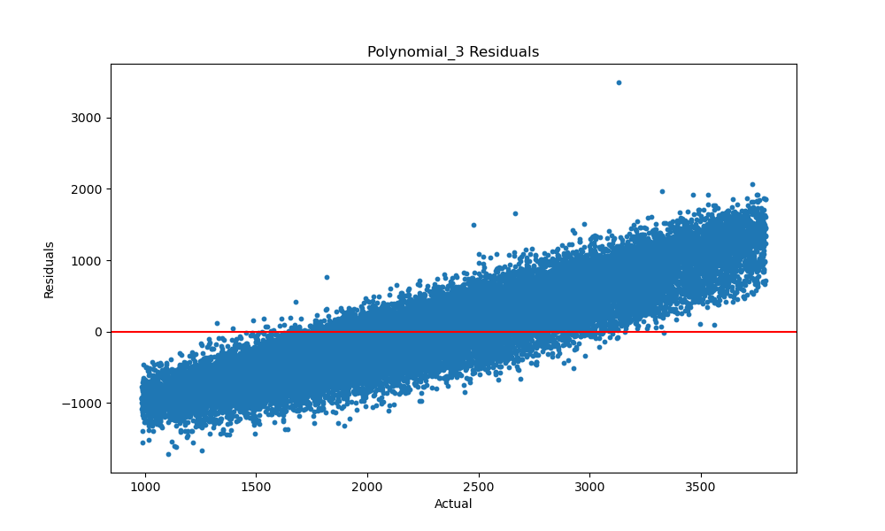
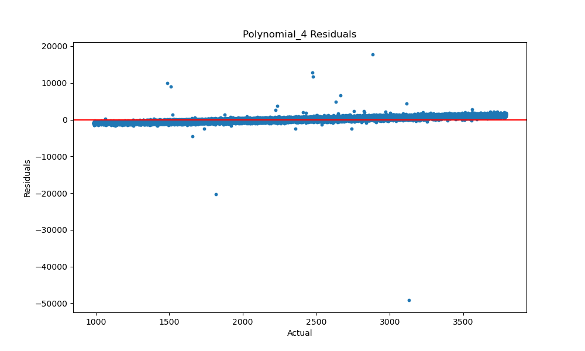

DoorDash ETA Prediction
Team Members: Chathurvedhi Talapaneni, Om Khare, Sai Gokhale, Swebert Correa, Tanmay Chavan
Introduction
This project aims to use machine learning to accurately predict the estimated time of arrival (ETA) for DoorDash deliveries. By leveraging various features of historical delivery data, we can create a model that improves customer satisfaction and operational efficiency.
Related Works
Predicting the estimated time of arrival (ETA) is a lucrative application of Machine Learning. Wen et al. [1] conduct a comprehensive study of the problem, its types, and supervised and unsupervised approaches for it. Khiari et al. [2] explore random forests and ensembling approaches. Derrow-Pinion et al. [3] observe that graph representation is useful for this problem, and use a graph neural network based approach for predicting ETA. Araujo et al. [4] present an end-to-end convolutional neural network based pipeline for predicting delivery time for packages.
Dataset Description
We are using the DoorDash ETA prediction dataset from Kaggle. The dataset contains 197,428 data samples with features such as city, store ID, number of items, and DoorDash marketplace features like the number of available dashers and estimated travel time from the store to the customer.
Problem Definition
The main goal of our project is to estimate the time required for delivering food based on past data from DoorDash. Accurate predictions can result in happier customers and optimized delivery routes. The model uses features such as the number of ordered items, total price, and the store from which the food is ordered.
Motivation
- Customer Satisfaction: Delivering food on time ensures customer satisfaction.
- Operational Efficiency: Accurate ETAs help DoorDash assign drivers efficiently and reduce their wait times.
- Cost Reduction: By optimizing routes and minimizing delays, the company can save on fuel and reduce compensation for late orders.
- Competitive Advantage: Consistent timely deliveries give DoorDash an edge over competitors.
Data
The dataset contains historical DoorDash delivery data from early 2015, covering various cities. It includes:
- Time Features: Timestamps for order placement and delivery.
- Store Features: Restaurant ID, cuisine category, and order protocol.
- Order Features: Total items, subtotal (in cents), and item price range.
- Marketplace Features: Number of available and busy Dashers, and outstanding orders within 10 miles.
- Predicted Features: Estimated durations for order confirmation and delivery.
The target variable is the total delivery duration (in seconds), derived from order placement to delivery. The dataset has 197,428 rows with some missing and noisy values, requiring preprocessing for accurate modeling.
Below is a visualization of the distribution of store primary categories, highlighting the frequency of different cuisine types across the dataset.

Figure: Distribution of Store Primary Categories
Data Preprocessing
Data preprocessing is a crucial step in ensuring the dataset is clean, consistent, and ready for building accurate machine learning models. We performed a combination of non-ML-based preprocessing techniques and ML-based methods for handling outliers.
Non-ML Preprocessing Techniques
ML-Based Outlier Detection [Unsupervised Learning]
In addition to non-ML preprocessing techniques, we employed machine learning-based methods to detect and handle complex outliers in the delivery_time feature. These methods included:
Gaussian Mixture Models (GMM)
GMM is a probabilistic approach that assumes the data is generated from a mixture of Gaussian distributions. It fits the dataset to a specified number of Gaussian distributions and assigns probabilities to each data point, indicating how likely it is to belong to the mixture.
- Implementation:
- Fitted a single-component GMM to the
delivery_time feature to capture its distribution.
- Calculated likelihood scores for all data points.
- Defined a threshold based on the 10th percentile of likelihood scores, treating points below this threshold as outliers.
- Outcome:
- GMM successfully identified outliers in a probabilistic manner, flagging data points with low likelihoods.
- The process improved the dataset quality by retaining valid data points while removing noise.
K-Means Clustering
K-Means is a clustering algorithm that partitions data into K clusters by minimizing the variance within each cluster. Although primarily a clustering technique, it can also be used for outlier detection by analyzing distances from cluster centroids.
- Implementation:
- Fitted a K-Means model with a single cluster to the
delivery_time feature.
- Calculated the Euclidean distance of each point from the cluster centroid.
- Defined a threshold at the 90th percentile of distances, treating points exceeding this threshold as outliers.
- Outcome:
- K-Means flagged outliers based on distance thresholds, providing an alternate perspective on anomalous data points.
- The process cleaned the dataset by removing noise and retaining valid points.
Comparison of GMM and K-Means
While GMM and K-Means use different approaches—probabilistic and geometric, respectively—their performance on our dataset was nearly identical. Both methods flagged similar data points as outliers, leading to comparable improvements in dataset quality. This highlights their effectiveness and reinforces confidence in the preprocessing pipeline.
- GMM: Captured outliers using likelihood scores, focusing on probabilistic nuances in the data.
- K-Means: Identified outliers based on distances from the cluster centroid, offering a geometric perspective.
- Observation: Both methods ultimately flagged the same or nearly the same outliers, indicating that either approach could be used interchangeably for this dataset.
Based on these results, we concluded that both methods are robust for detecting outliers in this context.
Feature Dimensionality Reduction [Unsupervised Learning]
Principal Component Analysis (PCA)
We attempted to use Principal Component Analysis (PCA) for dimensionality reduction to simplify the dataset and improve model performance. The main idea was to reduce redundancy and retain only the most significant components, making the dataset easier for models to learn from.
- We used the
sklearn.decomposition.PCA library to apply PCA on our dataset.
- After testing various retained variance thresholds, we decided on retaining 95% of the variance, which reduced the number of features to a smaller subset.
- The aim was to reduce feature dimensionality while maintaining most of the information in the dataset.

Figure: Cumulative Explained Variance by PCA Components
However, the results of using PCA for dimensionality reduction did not improve model performance. In fact, the predictive accuracy worsened slightly in most cases.
- Reason for Poor Results: PCA projects features onto a new space, losing the interpretability of the original features. This affected our model’s ability to leverage domain-specific knowledge inherent in features like
subtotal or delivery_time.
- Conclusion: While PCA reduced feature dimensionality effectively, the transformed features did not perform well in our regression models. We decided to drop PCA from our pipeline to retain the original feature space and interpretability.
The PCA variance plot above shows that while the first two components explain over 95% of the variance, the transformed features lacked alignment with domain-specific patterns, leading to suboptimal results.
Proposed Regression Models: [Uses Supervised Learning]
We experimented with a variety of supervised learning models for the ETA prediction task. Below is a detailed description of each method and the rationale for selecting them:
1. Ridge Regression
Ridge Regression is a linear regression model that incorporates L2 regularization, penalizing large coefficient magnitudes to prevent overfitting. This makes it particularly effective in datasets with multicollinearity, where features are highly correlated. Its simplicity and computational efficiency make it a solid baseline for regression tasks.
2. Polynomial Regression
Polynomial Regression extends linear regression by introducing polynomial features, allowing the model to capture non-linear relationships between predictors and the target variable. While it is useful for modeling curved patterns in the data, higher-degree polynomials can lead to overfitting and computational inefficiencies. Careful selection of the polynomial degree is critical for this method's success.
3. Support Vector Regression (SVR)
Support Vector Regression (SVR) applies the principles of Support Vector Machines (SVM) to regression problems. By using kernel functions, SVR can transform the data into higher-dimensional spaces, making it capable of modeling complex non-linear relationships. This method is robust to outliers and works well with both linear and non-linear datasets. However, it tends to be computationally intensive due to the kernel transformations.
4. Decision Tree Regression
Decision Tree Regression splits the data into hierarchical partitions based on feature thresholds, making it highly interpretable and effective at modeling non-linear relationships. It is particularly suitable for capturing interactions between features. However, decision trees are prone to overfitting, especially when they grow too deep without pruning.
5. Random Forest Regression
Random Forest Regression is an ensemble learning method that constructs multiple decision trees and aggregates their predictions to improve generalization. By averaging the outputs of many trees, this method reduces overfitting and increases robustness. Random Forest is effective for capturing non-linear relationships and feature interactions but is less interpretable than a single decision tree.
6. Boosting Regression
Boosting methods are ensemble techniques that combine the predictions of multiple weak learners, typically decision trees, to create a strong predictive model. They iteratively focus on correcting errors from previous models, achieving higher accuracy and robustness. We experimented with the following boosting methods:
- Gradient Boosting: Optimizes a loss function iteratively, making it a powerful tool for regression tasks.
- AdaBoost: Adjusts the weights of observations to focus on those with higher errors, improving prediction accuracy.
- XGBoost: Enhances Gradient Boosting with optimizations like tree pruning and regularization, offering faster and more accurate results.
- LightGBM: Uses a histogram-based approach for faster training, making it scalable and efficient for large datasets.
- CatBoost: Handles categorical features natively, reducing the need for extensive preprocessing and improving accuracy on datasets with mixed data types.
Evaluation Metrics
For each model, we evaluated performance using the following metrics:
- Mean Squared Error (MSE): Measures the average squared difference between predicted and actual values, penalizing larger errors more heavily.
- Mean Absolute Error (MAE): Captures the average magnitude of prediction errors, providing an intuitive measure of accuracy.
- R-Squared (R²): Indicates the proportion of variance in the target variable explained by the model.
- Explained Variance: Measures the fraction of variance in the target variable captured by the predictions.
Workflow
The workflow implemented for model evaluation included the following steps:
- Data Splitting: The preprocessed datasets (
df_kmeans and df_gmm) were split into training and testing sets (80-20).
- Model Training: Each model was trained on the training data for both datasets.
- Performance Evaluation: Models were evaluated on the testing data using the metrics mentioned above.
These experiments provided insights into the strengths and weaknesses of different models for our dataset, guiding the selection of the best-performing approach.
Results and Evaluation
We evaluated the performance of different models based on four metrics: MSE, MAE, R², and Explained Variance. The training time for each model was also recorded. The tables below summarize the results:
Model Performance Metrics
| Model |
RMSE (minutes) |
MAE |
R² |
Explained Variance |
| Decision Tree | 16.570 | 679.52 | -0.5995 | -0.5986 |
| Polynomial (degree 2) | 12.098 | 502.45 | 0.1710 | 0.1710 |
| Polynomial (degree 3) | 11.957 | 496.91 | 0.1870 | 0.1871 |
| Polynomial (degree 4) | 20.013 | 502.45 | 0.1710 | 0.1710 |
| Polynomial (degree 5) | 54974.603 | 502.45 | 0.1710 | 0.1710 |
| Ridge Regression | 12.279 | 508.68 | 0.1523 | 0.1523 |
| Support Vector Regression (SVR) | 13.067 | 510.23 | 0.1493 | 0.1520 |
| AdaBoost | 12.424 | 520.19 | 0.1406 | 0.1514 |
| CatBoost | 11.170 | 467.34 | 0.2737 | 0.2737 |
| Gradient Boosting | 11.672 | 487.23 | 0.2210 | 0.2211 |
| LightGBM | 11.368 | 475.19 | 0.2536 | 0.2536 |
| Random Forest | 11.630 | 485.19 | 0.2224 | 0.2228 |
| XGBoost | 11.246 | 469.07 | 0.2648 | 0.2648 |
RMSE as the primary metric: We used Root Mean Squared Error (RMSE) as the primary metric to compare the performance of different models. RMSE was chosen because it penalizes larger errors more heavily, making it a suitable metric for tasks like ETA prediction where large deviations in predictions can significantly impact customer experience and operational efficiency.
We observe several interesting results here. Our simplest approach, Ridge Regression, performs well when compared to the rest of the models. It achieves an RMSE of 12.279, which is comparable to the best-performing methods.
- Polynomial Regression:
Polynomial regression models exhibit high variance with respect to the degrees. The best-performing model was with degree 3, achieving an RMSE of 11.957. However, the polynomial regression model with degree 5 is completely inaccurate, with an extremely high RMSE score of 54,974.603. This highlights how higher-degree polynomial models should be avoided. A better approach for future work would be to use polynomial splines to better model the data.
- Support Vector Regression (SVR):
Obtains a modest RMSE of 13.067. Although its performance is decent, it is not as strong as some of the other approaches.
- Decision Tree:
The decision tree model did not perform as well, with a higher RMSE of 16.570 minutes. However, our random forest model obtained significant performance improvement, with an RMSE of 11.630 minutes. This supports the belief that random forests perform better than a single decision tree, albeit at the cost of interpretability and more computational time.
- Boosting Approaches:
Boosting methods performed exceptionally well overall. The differences between the best and worst-performing boosting methods were minimal:
- AdaBoost: RMSE of 12.424, the highest among boosting methods.
- XGBoost: RMSE of 11.246, second-best performance.
- CatBoost: The best-performing model overall, with an RMSE of 11.170 minutes.
These results show that boosting provides excellent performance gains regardless of the specific variant used.
Model Training Time
| Model |
Time (seconds) |
| Decision Tree |
1.017 |
| Polynomial (degree 2) |
0.219 |
| Polynomial (degree 3) |
0.948 |
| Polynomial (degree 4) |
11.190 |
| Polynomial (degree 5) |
163.204 |
| Ridge Regression |
0.042 |
| Support Vector Regression (SVR) |
371.238 |
| AdaBoost |
3.262 |
| CatBoost |
5.212 |
| Gradient Boosting |
14.015 |
| LightGBM |
0.261 |
| Random Forest |
65.492 |
| XGBoost |
0.257 |
Another important aspect of model evaluation is the time required for computation. Machine learning models often require significant computational resources, which can increase costs and negatively impact the environment. The training times for various models are summarized in the table above.
- Ridge Regression:
Requires the least time to train, at only 0.042 seconds. This makes it highly efficient and suitable for quick training needs.
- Polynomial Regression:
Training time increases with the degree. The polynomial regression model with degree 5 took an inordinately large time period (163.204 seconds) to train, further supporting the idea that higher-degree polynomial models should be avoided.
- Support Vector Regression (SVR):
Requires the longest training time, at 371.238 seconds. This is due to the kernel transformations and optimization required to fit the hyperplane. Despite its decent performance, its computational cost makes it less favorable compared to simpler models like Ridge Regression.
- Decision Tree and Random Forest:
The decision tree model took approximately 1 second to train, while the random forest model required over 65 seconds due to the ensemble nature of the algorithm.
- Boosting Approaches:
Boosting algorithms exhibit variance in training time depending on the variant:
- LightGBM: The fastest, requiring only 0.261 seconds.
- Gradient Boosting: The slowest among boosting methods, taking 14.015 seconds.
- CatBoost: The best-performing model in terms of RMSE required 5.212 seconds for training, which is a reasonable trade-off considering its accuracy.
To better understand the trade-offs between model performance and training time, we plotted the Root Mean Squared Error (RMSE) and training time for each model. Additionally, a bubble chart was created to visualize the relationship between training time, RMSE, and model complexity.
RMSE vs. Model
The bar chart below represents the RMSE (log-transformed and normalized) for different models, allowing us to compare their performance visually. Lower RMSE values indicate better model performance.

Figure 1: Log-Transformed RMSE for Different Models
Training Time vs. Model
The second bar chart highlights the training times (log-transformed and normalized) for each model. This visualization emphasizes the computational cost associated with training each model.

Figure 2: Log-Transformed Training Time for Different Models
Bubble Chart: Training Time vs. RMSE with Complexity
The bubble chart below provides a combined view of training time, RMSE, and model complexity. Here:
- The x-axis represents the training time (normalized and log-transformed).
- The y-axis represents the RMSE (normalized and log-transformed).
- The bubble size indicates model complexity, which is a weighted combination of RMSE (70%) and training time (30%).
This chart effectively shows the trade-offs between model accuracy, training cost, and complexity, helping identify the best-performing models in terms of both accuracy and efficiency.

Figure 3: Bubble Chart: Training Time vs RMSE with Complexity
Residual Plots
Below are the residual plots for each model, providing insights into the distribution of residuals (prediction errors) and their relationship with predicted values:

Polynomial (Degree 2)

Polynomial (Degree 3)

Polynomial (Degree 4)

Decision Tree
Residual Plot Analysis
Residual plots visualize the differences between predicted and actual values, helping us assess model performance. Below are insights from the residual plots:
- Ridge Regression: Residuals show moderate spread and little deviation from zero, indicating a moderate fit
- Polynomial Regression (Degree 2-4): Degree 3 aligns better with the zero line, suggesting a good fit. Higher degrees (e.g., Degree 4) lead to overfitting, as evident from residual variance.
- Decision Tree: Patterns of heteroscedasticity suggest overfitting due to the model’s ability to perfectly split data.
- Random Forest: Residuals are more generalized and well-distributed along zero, showing improved performance compared to Decision Tree.
- Boosting Algorithms (XGBoost, LightGBM, CatBoost): These models show tightly concentrated residuals, reflecting their effectiveness in capturing complex patterns and reducing errors.
- AdaBoost: Residuals show slightly higher variance compared to other boosting methods, but the model still performs reasonably well.
Overall, boosting algorithms like CatBoost and XGBoost exhibit the best performance, while ridge regression, polynomial regression (Degree 3) and Random Forest also provide strong results.
Conclusion and Learnings
Conclusion
In this project, we aimed to predict the Estimated Time of Arrival (ETA) for DoorDash deliveries using various regression models. Our experiments involved extensive data preprocessing, feature engineering, outlier removal using advanced techniques (GMM and K-Means), and model evaluation across multiple metrics.
The results highlighted the following key points:
- Boosting models: CatBoost emerged as the best-performing model with the lowest RMSE of 11.170 minutes, closely followed by XGBoost and LightGBM.
- Ridge Regression: Despite being a simple approach, Ridge Regression achieved competitive results with an RMSE of 12.279 minutes and the shortest training time of only 0.042 seconds.
- Random Forest: Random Forest regression performed significantly better than the Decision Tree model, achieving an RMSE of 11.630 minutes.
- Polynomial Regression: While Polynomial Regression (degree 3) showed good performance, higher-degree polynomials (e.g., degree 5) drastically reduced accuracy and increased computational cost.
- Support Vector Regression: SVR achieved modest accuracy but required the longest training time, making it less practical for real-world deployment.
The analysis of training time and RMSE further emphasized the trade-offs between accuracy, interpretability, and computational efficiency. Boosting methods were effective but required careful hyperparameter tuning, while Ridge Regression and LightGBM offered excellent trade-offs between performance and speed.
Learnings
This project provided several valuable insights into building and evaluating regression models for real-world applications:
- Preprocessing is critical: Advanced preprocessing techniques, including Gaussian Mixture Models (GMM) and K-Means, significantly improved the quality of the dataset, leading to better model performance.
- Model selection depends on use case: While CatBoost and XGBoost offered the best performance, Ridge Regression proved ideal for scenarios requiring faster training and low computational cost.
- Polynomial Regression limitations: Higher-degree polynomial regression models introduced overfitting and were computationally expensive. Exploring alternatives like spline regression could address these issues in future work.
- Visualization is key: Visual tools like bar charts and bubble charts helped analyze the trade-offs between accuracy, training time, and model complexity, providing actionable insights into model selection.
- PCA is not always effective: Dimensionality reduction using PCA does not always yield better results. In this project, PCA led to a loss of important variance, negatively affecting model performance. It is important to evaluate the necessity of PCA based on dataset characteristics.
In conclusion, this project demonstrated the power of machine learning in predicting delivery times, with boosting methods like CatBoost emerging as the most effective. Future work could involve testing additional preprocessing techniques, exploring alternative regression methods, and optimizing hyperparameters further to enhance both performance and efficiency.
Future Work
While this project demonstrated the effectiveness of machine learning models in predicting ETAs, there are several areas for future exploration:
- Advanced preprocessing techniques: Incorporating additional preprocessing methods, such as handling categorical variables using advanced encodings or imputation strategies for missing data, could further enhance the dataset quality.
- Spline regression: Exploring polynomial splines or other advanced regression methods may help model non-linear relationships without overfitting, addressing the limitations of higher-degree polynomial regression.
- Deep learning models: Investigating deep learning approaches like Fully Connected Neural Networks (FCNN) or Transformer-based models could improve performance on larger, more complex datasets.
- Hyperparameter tuning: Further optimization of hyperparameters using grid search or Bayesian optimization could unlock better performance for boosting and ensemble models.
By addressing these areas, the performance and practicality of ETA prediction systems can be further improved, paving the way for more efficient delivery systems and enhanced customer satisfaction.
References
- A Survey on Service Route and Time Prediction in Instant Delivery: Taxonomy, Progress, and Prospects, Haomin Wen and Youfang Lin and Lixia Wu and Xiaowei Mao and Tianyue Cai and Yunfeng Hou and Shengnan Guo and Yuxuan Liang and Guangyin Jin and Yiji Zhao and Roger Zimmermann and Jieping Ye and Huaiyu Wan, Arxiv pre-print, 2023. Paper link.
- Boosting Algorithms for Delivery Time Prediction in Transportation Logistics, Khiari, Jihed and Olaverri-Monreal, Cristina, 2020 International Conference on Data Mining Workshops (ICDMW), 2020. Paper link.
- ETA Prediction with Graph Neural Networks in Google Maps, Proceedings of the 30th ACM International Conference on Information & Knowledge Management, 2021. Paper link.
- End-to-End Prediction of Parcel Delivery Time with Deep Learning for Smart-City Applications, Arthur Cruz de Araujo and Ali Etemad, Arxiv pre-print, 2021. Paper link.
Contribution Table
| Name |
Proposal Contributions |
| Chathurvedhi Talapaneni | Methods: Data processing and ML algorithms. Data preprocessing and unsupervised learning. |
| Om Khare | Results and metrics. Creating Github Page. Data preprocessing and unsupervised learning. |
| Sai Gokhale | Gantt Chart, video preparation, idea proposal. Supervised learning and visualizations. |
| Swebert Correa | Introduction and problem definition. Quantitative metrics and model analysis. Handled website updates. |
| Tanmay Chavan | Related Work Survey and dataset. Supervised learning and visualizations. |